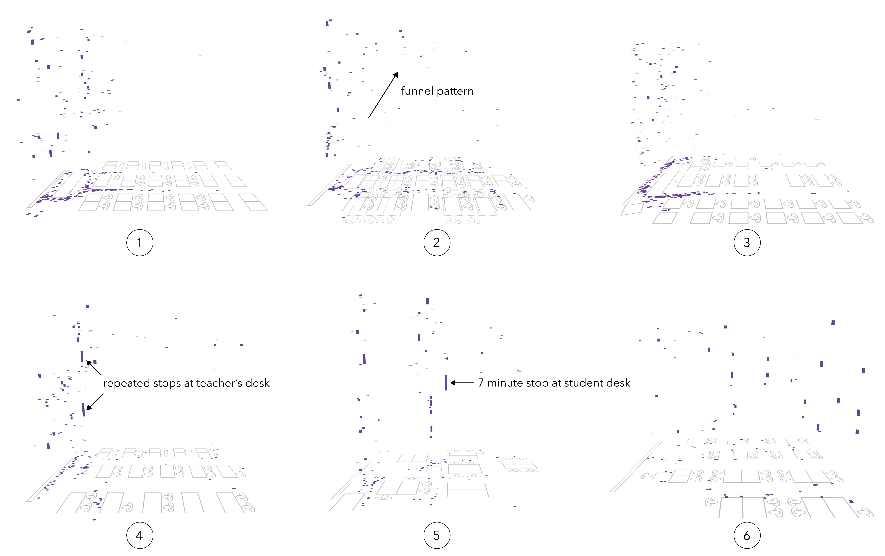

Figure 3. Annotated IGS screenshots showing all places and times when each teacher stops for more than one second. Stops are shown as purple circles on the floor plan while the same stop is represented in the space-time view as a thick line where length encodes the duration of a stop. Annotations mark different landmarks and how stops evolve across lessons.
